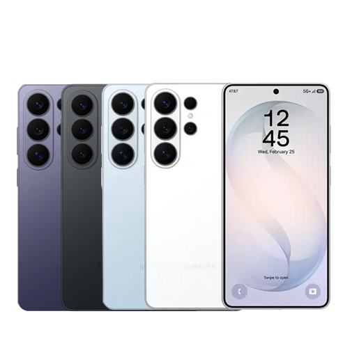

Celulares
Smartphones das melhores marcas, com modelos para todos os estilos e necessidades.
Confira os detalhes de nosso produto
Os smartphones modernos precisam oferecer muito mais do que conectividade. Desempenho, qualidade de imagem, autonomia de bateria e recursos inteligentes são fatores essenciais para quem busca praticidade no dia a dia.
Na ConnectX, trabalhamos com aparelhos das principais marcas do mercado, selecionados para atender diferentes perfis de usuários, desde quem utiliza o celular para tarefas básicas até aqueles que necessitam de alto desempenho para trabalho, estudos e entretenimento.
Equipados com processadores avançados, câmeras de alta resolução e sistemas operacionais atualizados, os modelos disponíveis proporcionam uma experiência fluida e eficiente em diversas atividades.
Tecnologia para acompanhar sua rotina
Os smartphones atuais foram desenvolvidos para oferecer velocidade, segurança e praticidade em todas as situações. Recursos como reconhecimento facial, leitor biométrico, conectividade 5G e baterias de longa duração garantem mais conforto e produtividade ao usuário.
Entre os principais benefícios estão:
- Processadores de alto desempenho para aplicativos e multitarefas;
- Câmeras com alta qualidade para fotos e vídeos;
- Baterias com excelente autonomia para uso prolongado;
- Conectividade avançada para navegação rápida e estável.